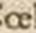
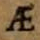

Sowohl die konsonantischen Ligaturen (tz, ct, ts, ff etc.) sowie die Ligatur ij als auch die in deutschsprachigen Texten üblichen Ligaturen wie fi, fl, ft, deren Derivate, sowie fk, fj, fh, fb, fz, ll, mm, nn, st, ch, ck, ct, th, tt, tz, kk, Qu, ſi, ſſ, ſt, ſch sind grundsätzlich aufzuspalten. Auf eine Dokumentation über das Vorhandensein einer Ligatur wird verzichtet.
Vokalische Ligaturen werden grundsätzlich realisiert:
| Vorlage | Zeichen | Entität | Beschreibung |
|---|---|---|---|
 |
æ | U+00E6 | LATIN SMALL LETTER AE |
|  | œ | U+0153 | LATIN SMALL LIGATURE OE |
|  | Æ | U+00C6 | LATIN CAPITAL LETTER AE |
 |
Π| U+0152 | LATIN CAPITAL LIGATURE OE |